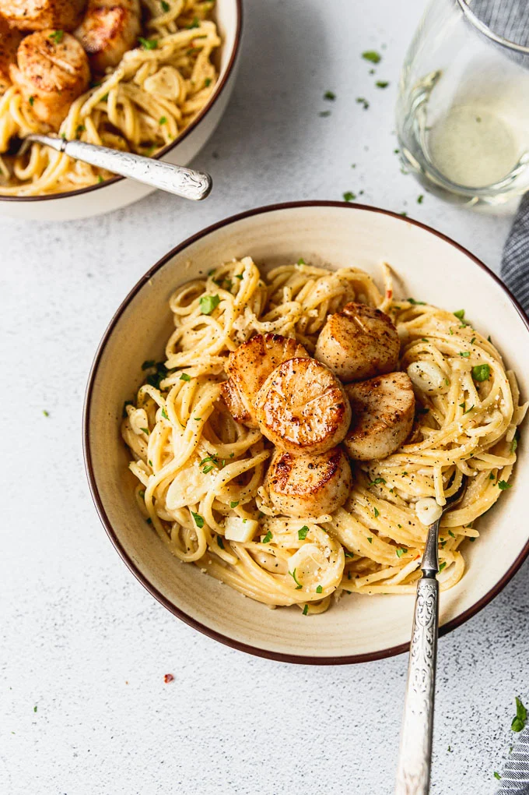

Scallop Pasta

This STUNNER of a creamy garlic scallop pasta dish will blow you and your loved ones away!
Ingredients
- Spaghetti noodles
- Sea Scallops
- Garlic
- Whole Milk
- Butter
- All-Purpose Flour
- Parmesan Cheese
Recipe
- Add garlic to a skillet with a lotta butter where it gets all tender and delish. Then add in some salt and red pepper flakes for flavor.
- Whisk in some flour to create a roux, and cook it down, being sure to continue mixing so it doesn’t burn. This helps our sauce thicken up (the thicker cheese sauce gets me every time).
- Deglaze the pan by pouring in vegetable stock (ok, you could totally go for white wine here too). Then stir in the room temperature whole milk. Making sure it’s room temperature or lukewarm ensures it won’t seize up or curdle.
- Toss the under al dente pasta into the sauce, adding the golden pasta water as needed for your desired consistency.
- Once it's tossed a bit, add in the parmesan. Let it melt into the pasta and watch as it totally amps up our creaminess factor.
- Pan-Sear the scallops until they have a perfectly golden brown crust and top the pasta with them. More on this in a minute!